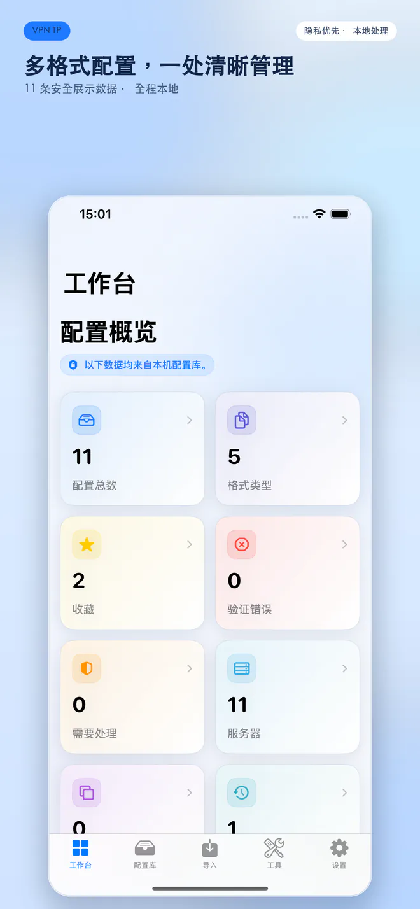
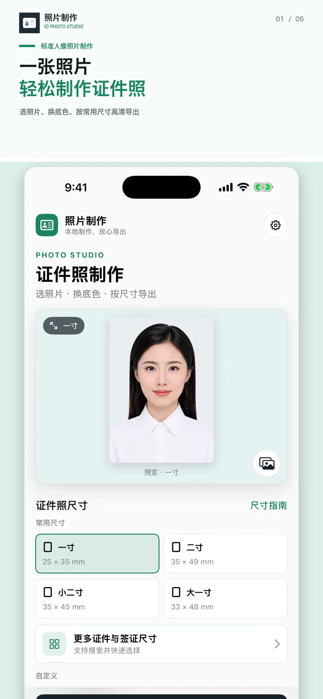
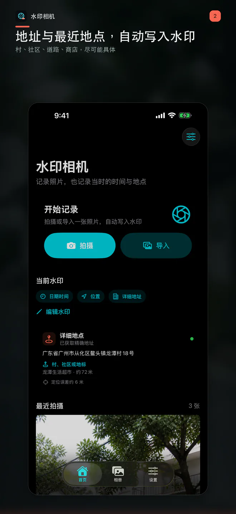
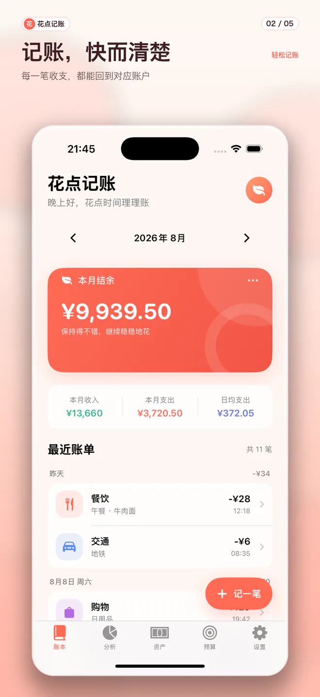
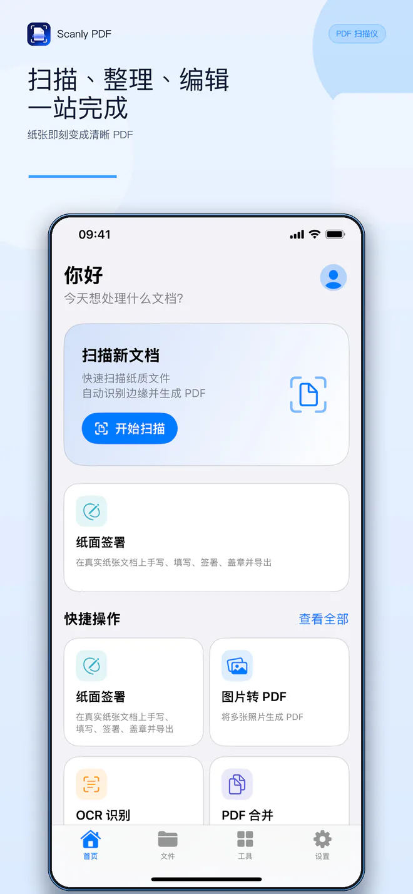
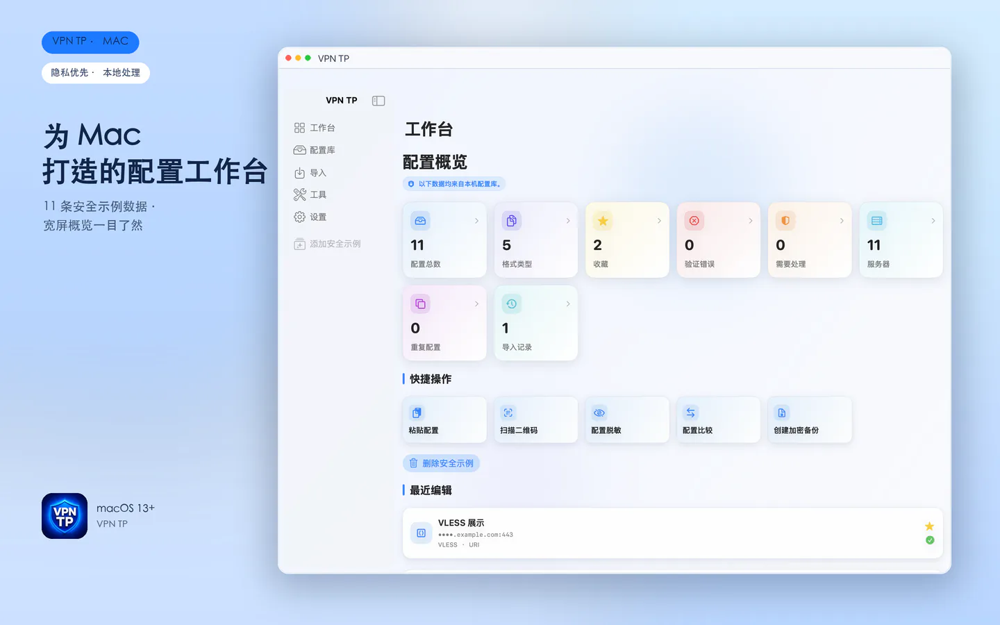
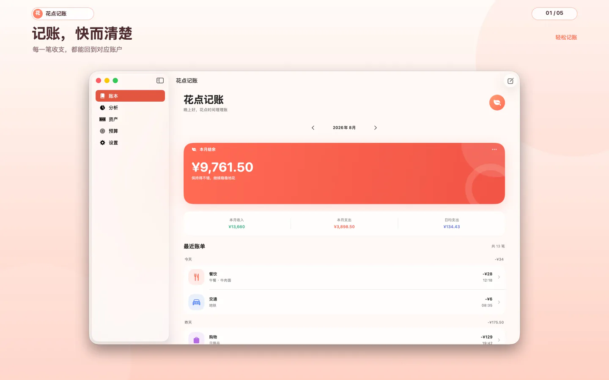
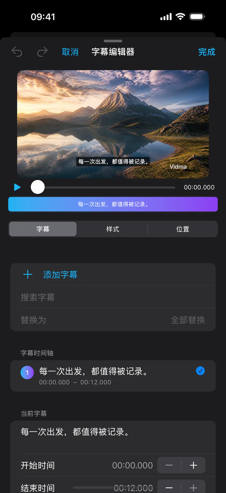

⌘ Mac + iPhone / iPad · 重大更新准备送审01

键盘星球
准确优先的儿童键盘学习旅程。9 个学习星球、72 节短课、本机弱键分析、家庭档案、自定义题库，以及 21 种神兽里程碑庆典。






MY TOOLBOX / 01
不追求复杂，只在需要的时候，
刚好帮上忙。
准确优先的儿童键盘学习旅程。9 个学习星球、72 节短课、本机弱键分析、家庭档案、自定义题库，以及 21 种神兽里程碑庆典。


A LITTLE ABOUT ME / 02
白天照顾家，晚上写代码。因为自己真的会用，所以更在意每一个按钮是不是顺手，每一段文字是不是温柔。
这些 App 都来自真实需要：记下日常花销、整理照片和文档，也把复杂的网络配置变得更清楚、更安全。
和我聊聊 →SAY HELLO / 03
无论是产品建议、合作邀请，还是想说一句“谢谢”，我都会认真读。